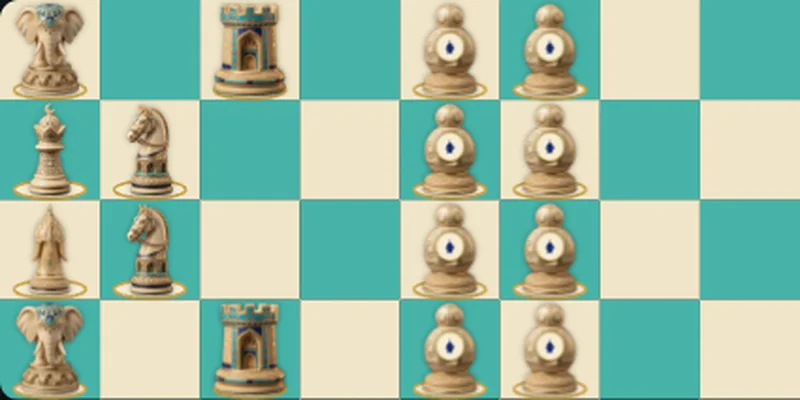

Uzun satranç
Zarın hangi taşın oynayacağına karar verdiği 4 × 16 tahtadaki şatranç: zarla oynanan bilinen en eski satranç.

Arap yazarlar bu oyuna türlü adlar verdi: X. yüzyılda el-Mes’ûdî el-müstatîle, «uzunlamasına», İbn Arabşah et-tavîle, «uzun», el-Âmulî ayrıca el-memdûde, «uzatılmış» dedi. Tahta dört kare eninde, on altı kare boyundadır; taşlar olağan şatrancınkilerdir ve aynı şekilde gider. Ordular tahtanın dar uçlarında, dörder sıra halinde durur.
Zar
Asıl fark zardır — tavlada kullanılan zar. El yazmaları der ki: altı şahı oynatır, beş ferzi, dört fili, üç atı, iki ruhu, bir piyonu. Saldırı altındaki şah kaçmak zorunda değildir: metne göre oyuncu «zar altı verinceye dek hiç oynayamaz», yani şah tehlikede oturup sayısını bekler — rakip de ona vuran taşın sayısını bekler. Bu oyunun çuhası iki parçadan dikilir, arkasına tavla alanı çizilirdi: bir örtü, iki oyun.
Tarifi aktaran üç Arapça el yazması onu IX. yüzyıl ortasında Bağdat’ın en güçlü oyuncusu el-Adlî’den aldığını açıkça söyler. Demek ki oyun 850’de zaten vardı ve bu, satrançta hamleyi zarın belirlediği bilinen en eski örnektir — Avrupa «zarlı satrancı»ndan yarım binyıl önce. Murray tek zarla oynandığını düşünüyor ve oyunu «zarlı ya da zarsız, gayet oynanabilir» buluyordu.
Ali Şatrancî’nin evinde
Tarihçi İbn Arabşah, Timur sarayının şampiyonu Ali eş-Şatrancî’yi anlatırken yazar: «Evinde yuvarlak satrancı ve uzun satrancı gördüm.» Böylece IX. yüzyıl Bağdat risalelerindeki bu oyun XV. yüzyıl başındaki Semerkant’a ulaştı.
Biz nasıl oynuyoruz
El yazmalarındaki dizilişler ayrışır — Murray yedi tane saymıştır. Biz Arapça V ve Man. el yazmalarının verdiğini aldık: şah c1’de, ferz b1’de, filler a1 ve d1 köşelerinde, atlar b2 ve c2’de, ruhlar a3 ve d3’te, piyonlar beşinci ve altıncı sıralarda; siyahlar aynı şekilde, ama yarım tur döndürülmüş durur, böylece şahları b16’ya düşer. Zarla şah denetimi geçerli değildir ve oyun şahın alınmasıyla ya da «çıplak şah»la biter. Zarsız bu, uzun tahtada olağan şatrançtır.